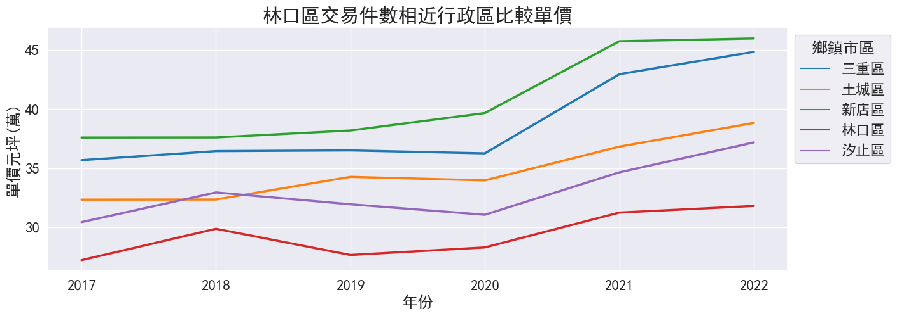

New Taipei City House Price Analysis Using Python
Tech Used:
- Python
- seaborn
Dataset Source:
Github project Link:
新北市林口區房價分析-專案發想


新北市人口在2023年重返400萬大關，其中從2018~2022人口增長最多的行政區為林口區，身為從小在林口區域長大的在地人有感夜晚的點燈率高，空屋率似乎降低了 林口區是否真的成為新聞標題中的高CP宜居城市，我想利用2017~2022年度林口區相對新北市的房價來比較，大家移居林口的主因是否真的是房價引力。
以下將會利用資料視覺化方式回答以下幾點
- 哪一個行政區的交易件數最多? 林口在交易數排名位居第幾？
- 房價排名哪一區最高？林口在房價排名位居第幾？
- 利用單價相近與交易件數相近行政區與林口做逐年比較
- 比較相近的行政區交易坪數比較
- 結論
Q1. 哪一個行政區的交易件數最多? 林口在交易數排名位居第幾？
板橋區交易件數最多6年內有20033件，淡水則有將近20000件，林口區交易數為新北市排第五，與汐止區、新店區、三重區相近交易數約在10000筆。
Q2. 房價排名哪一區最高？林口在房價排名位居第幾？
永和區房價最高約為一坪44.4萬，林口則排名居中為第14名房價約為一坪29.3萬。
由此可看出林口的房價真的是有吸引力的，另外淡水的低房價也顯示了買氣。

Q3. 利用單價相近與交易件數相近行政區與林口做逐年比較
- 在件數相近的行政區中比較單價，林口相較於其他行政區是最有房價優勢。 
- 在單價相近的行政區比較件數，林口區的交易件數則遠超過其他區域。
Q4. 比較相近的行政區交易坪數比較
- 林口區相較其他行政區交易坪數為最高，消費者願意在林口購買較大坪數的物件。
結論
- 2018年林口區出現一波購屋的高潮，由於相較於其他新北市熱區林口房價較低，在相近房價的區域則擁有較好的生活機能而出線。
- 另外消費者也傾向在林口購買較高坪數的物件，由此點可推估購買林口的消費者大多數是自住需求，對於生活空間有較高的要求。
- 以房價、交易件數及交易坪數來推估，林口區在新北市區域中除了具有房價優勢以外也具有吸引自住家庭型的消費者特點，宜居城市的稱號應該不只是新聞標題，以2022交易件數上升的走勢未來林口移入人數還有可能繼續增長。